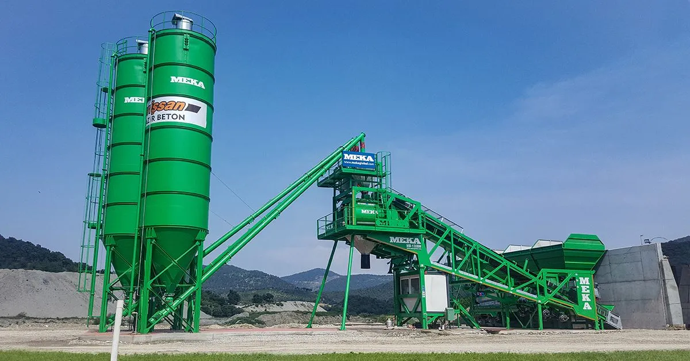
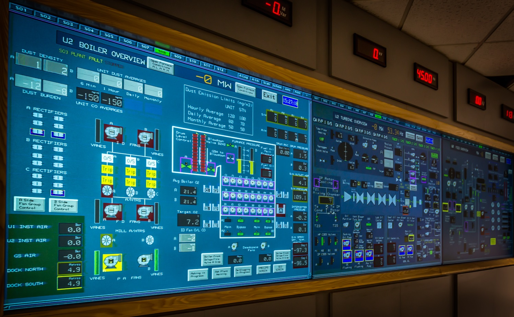

Мы разрабатываем и внедряем системы автоматизации для бетонных заводов любой сложности.
Контроллеры, датчики и панели управления обеспечивают точную дозировку компонентов и стабильное качество продукции.
Автоматический контроль процессов снижает человеческий фактор и минимизирует простои оборудования.
Надежные решения позволяют управлять производством эффективно, безопасно и предсказуемо.

Мы внедряем автоматизацию асфальтных заводов, повышая точность дозировки, сокращая простои и снижая расходы.
Контроллеры, датчики и панели управления обеспечивают полную безопасность и стабильную работу оборудования.
Управляйте процессом с одного экрана — быстрее, удобнее и надежнее.
Доверьте автоматизацию профессионалам и получите завод, который работает как часы.

Мы внедряем современные системы автоматизации для асфальтных и бетонных заводов.
Контроллеры, датчики и панели управления обеспечивают точность, безопасность и стабильную работу оборудования.
Каждый процесс под контролем: от дозировки материалов до мониторинга всего завода.

Мы создаем интуитивно понятные SCADA‑системы и интерфейсы управления заводом.
Цветные панели, графики, датчики и индикаторы позволяют отслеживать процессы в реальном времени.
Каждый показатель под контролем: от температуры и давления до работы оборудования и дозировки материалов.
Удобный и современный интерфейс повышает эффективность операторов и делает работу завода прозрачной и безопасной.